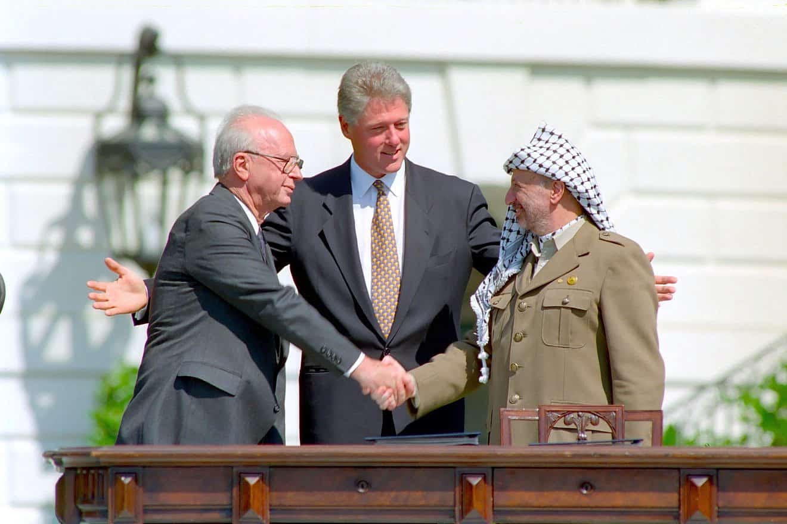

1991–2001
1991–2001: The Limits of American Power and the Unfinished Question
<<<<<<< HEAD40Iraq after the Gulf War: sanctions, inspections, and sovereignty
After the liberation of Kuwait, Saddam Hussein continued to rule Iraq. UN sanctions and inspection efforts aimed to constrain the militaristic and weapon capabilities of Iraq. Civilians endured harsh economic and humanitarian suffering, with historical experts having differing views regarding the effects of the sanctions, war destruction, Iraqi government policies, and humanitarian constraints. Military forces were still present by the US and its allies. In a war conducted on the basis of reclaiming the national boundaries of Kuwait, coercion was imposed on Iraq afterward.
41Madrid Peace Conference, 1991
After the Gulf War, the Bush administration and its Secretary of State, James Baker, initiated new talks between Arabs and Israelis. In October 1991, the peace conference in Madrid began with the participation of Israeli, Arab states’ and Palestinian representatives to conduct talks on security issues, territories, and political representation. However, the interests and bargaining power of the participants made it difficult for the peace process to move forward.
42Oslo Accords, 1993
Behind-the-scenes negotiations funded by Norway resulted in the Israeli-Palestinian agreement known as the Declaration of Principles on Interim Self-Government Arrangements, signed on September 13, 1993 at the White House. Israel recognized the PLO as the representative of Palestinians, and the PLO recognized Israel and rejected terrorism. This agreement allowed for partial self-governance for the Palestinians and future discussions regarding their final status. Issues concerning Jerusalem, borderlines, settlements, refugees, and security had yet to be resolved. It was Clinton’s administration that accepted and supported the execution of this agreement but did not initiate secret talks behind the scenes.
=======31Iraq after the Gulf War: sanctions, inspections, and sovereignty
Iraq remained under Saddam Hussein after Kuwait's liberation. UN sanctions and inspection demands sought to restrain Iraq's military and weapons programs. Civilians suffered grave economic and humanitarian hardship, with historians debating the roles of sanctions, war damage, Iraqi government policy, and humanitarian restrictions. The United States and partners maintained military deployments and enforcement operations. A war justified as restoring Kuwait's territorial sovereignty was followed by sustained coercion against Iraq. The question shifted toward the limits of international enforcement and how far security policy could restrict a sovereign government.
32Madrid Peace Conference, 1991
Following the Gulf War, the Bush administration and Secretary James Baker promoted new Arab–Israeli negotiations. The Madrid Peace Conference opened in October 1991 with representatives of Israel, Arab countries, and Palestinians. It sought negotiation over security, territory, and political representation. American postwar influence enabled diplomacy, but the participants' competing claims and unequal bargaining positions limited progress. Strategic interests could motivate peace initiatives, not only military action.
33Oslo Accords, 1993
Secret Norway-sponsored negotiations led Israel and the PLO to exchange recognition and sign the Declaration of Principles on Interim Self-Government Arrangements on September 13, 1993 at the White House. Israel recognized the PLO as Palestinian representative; the PLO recognized Israel and renounced terrorism. The agreement provided for limited Palestinian self-government and later talks on final-status issues. Jerusalem, borders, settlements, refugees, and security remained unresolved. Clinton's administration embraced and facilitated implementation but had not organized the initial secret negotiations. The process showed support for limited self-government alongside strategic concern for Israel's security and regional stability.
>>>>>>> ff179e925e14bb0aebfd486c924b64a37c89ccab
43Operation Desert Fox, December 1998
The American and British armies carried out air strikes on Iraq in December 1998. The air strikes were justified by President Clinton based on the issue of weapons, inspections and security of the region. The issue brings up a new issue of sovereignty as compared to that of 1991 – the continued use of force to coerce a sovereign state seen as a threat to other nations without any invasion taking place.
=======34Operation Desert Fox, December 1998
American and British forces launched airstrikes against Iraq in December 1998. Clinton justified the operation through concerns about Iraqi weapons, inspections, and regional security. Critics questioned its effectiveness and consequences. The event raises a different sovereignty question from 1991: continued coercive military action against a government treated as a threat, even in the absence of an immediate invasion of a neighboring country. Official American justifications should be distinguished from independent evidence and historical analysis.
>>>>>>> ff179e925e14bb0aebfd486c924b64a37c89ccab
44Camp David summit, 2000
The U.S. government arranged for President Clinton to hold talks with Israeli Prime Minister Ehud Barak and Palestinian Authority President Yasser Arafat in July 2000 to deliberate on issues such as those of final status. The talks collapsed without any breakthroughs. Historians and the conference participants have differing views as to why the talks failed. The aim of the U.S. government was to achieve peace and Palestinian self-governance while keeping friendly ties with Israel.
45Second Intifada, 2000–2001
The violence grew toward the end of September 2000 with the failure of the peace process, the occupation and the rival claims of politics and security. Both the Palestinian attacks and Israeli military operations resulted in great suffering among the civilians. The U.S. efforts to halt the hostilities and re-launch the peace process were limited by their power.
46September 11, 2001
Al-Qaeda launched an attack against the United States on September 11. The American government revised its national security strategy in terms of international terrorism, and the US military actions started in Afghanistan in October 2001. Afghanistan fits into the larger picture of Southwest Asian security history but is not quite the same as the Arab Middle East region. September 11 was the last date of the chronology, but cannot be seen simply as the result of one past intervention.
=======35Camp David summit, 2000
President Clinton hosted Israeli Prime Minister Ehud Barak and Palestinian leader Yasser Arafat in July 2000 to discuss final-status questions, including Jerusalem, territory, refugees, and security. The summit ended without agreement. Participants and historians disagree about the reasons. The United States sought peace and Palestinian political self-government while maintaining a close Israeli relationship. American influence could create a negotiating forum but could not resolve incompatible expectations by itself.
36Second Intifada, 2000–2001
Violence escalated in late September 2000 amid the failed peace process, occupation, and competing political and security claims. Palestinian attacks and Israeli military operations caused severe civilian suffering. U.S. diplomacy sought to stop the fighting and resume talks, but American leverage had limits. By 2001 Palestinian self-determination remained unresolved alongside Israel's demand for security.
37September 11, 2001
Al-Qaeda attacked the United States on September 11. Washington reframed national security around transnational terrorism, and military operations in Afghanistan began in October 2001. Afghanistan is part of broader Southwest Asian security history but not identical to the Arab Middle East. September 11 is the chronological endpoint here, not something to be simplistically attributed to one past intervention. By 2001 American regional commitments were far-reaching, but sovereignty, security, and political self-government remained contested.
>>>>>>> ff179e925e14bb0aebfd486c924b64a37c89ccab
Chapter conclusion: The decade of the nineties showed that American military superiority could reclaim the territorial sovereignty of one state but could not answer all the regional issues. The Iraqi issue, Palestinian autonomy, and security problems illustrated this point.